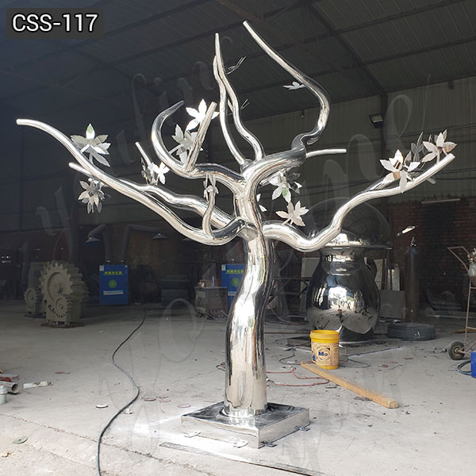

Art projects and deep fantasy
"Sólarfrí (Icelandic) When employees get an unexpected day or afternoon off to enjoy a particularly sunny and warm day. Sun vacation."
-- Feelings from ice, Thoughts, 2020
Our address is a moving droplet:
4 Green Road
Panmure
Auckland 1072
Moving email: wetgreen@gmail.com
I thought how houses are like books: so many of them around you, yet you only look at a few and visit or reside in fewer still. Usually you get sent to an inn, a lodging place, a tent rented for the night, or a cellar. Seldom, if at all, does it happen that a storm accidentally drives you back to the same house you used long ago, so that as you spend the night there you remember where you once slept and how everything, although still the same, was different then, how spring dawned through that window and autumn walked out of that door…
--M.P